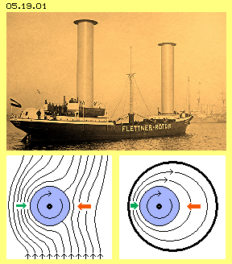
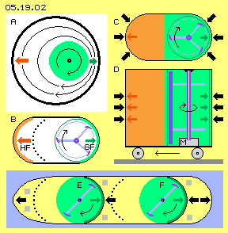
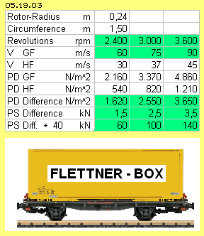
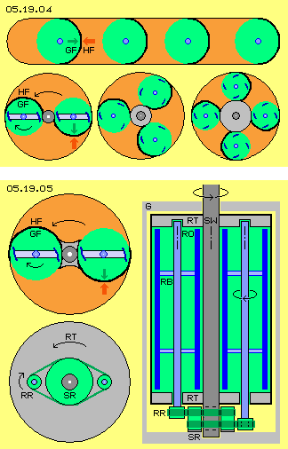
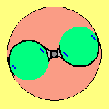
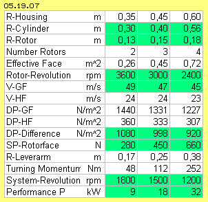

| Alfred Evert | 2016-03-31 |
05.19. Flettner - Box

At previous chapters concerning the Bowl-Engines, the motion principles of wings and sails were adapted within closed boxes, so thrust and uplift are generated without natural winds. Analogue, that successful principle of rotating cylinders should work within a closed system. At the following, the possibilities for such a ´Flettner-Box´ are investigated.
Below right side at picture 05.19.01, that cylinder-shaped rotor (blue) is embedded within a wider round hollow cylinder. As the rotor is turning, the air becomes running around, based on stiction. The air is drawn through a narrow gap rather fast (left). The flow moves corresponding slower at the wide cross section (right). As known by the Bernoulli-formula, the static pressures at these ´pipe-walls´ are quite different. Resulting is a thrust directed towards left (by the difference of red and green arrows).
Inverted Arrangement
As an example, at picture 05.19.02 at B, a rotor with three rotor-blades (blue) is moving along a concave, most smooth glide-face (GF, green). The rotor-blades are inclined a little bit, so the air is ´peeled-off respective sucked-off´ the face (much more effective than a massive cylinder could achieve). A concentrated potential-vortex comes up. All other faces should be rough, so the flow at the opposite stick-face (HF, red) is much slower. In order to keep the air nearby resting at this area, even it could be protected by a ´palings-fence´ (here marked by black points).

Below at picture 05.19.02, two units are installed within the fuselage of a ship (E and F, here e.g. only with each two rotor-blades). If the glide-faces would be as wide as the cylinders of the ´Buckau´ and both ´artificial whirlwinds´ would produce air flows likely fast, that ship would run ´forward-full-power´ like the ´Buckau´. However, this ship would be independent from natural winds, with thrust controllable as one likes it.
The fuselage must not be a hermetic closed box, but hatches (grey) within the fuselage could be open. It´s only important, the static pressure onto the ´suction-side of these internal fix mounted sail-faces´ is some reduced.
Using Free Energy
The power effects of common technologies mostly is achieved by transforming one shape of energy into an other shape, where energy-constant is valid and losses are inevitable. Here now, no energy-transformation occurs, but the free available energy of the normal molecular motions of the air particles is used. Their normally chaotic motion directions are ordered only a little bit, as it´s overlaid by a flow along curved faces. In comparison with resting air, these air particles hit onto the wall with less intensity. That´s all - and well known. Unusual is only that new kind of using the effect - however previous examples and arguments should make it the most natural things of the world.
Norm-Box and Power-Container 
At three columns the revolutions are calculated with 2400, 3000 and 3600 rpm. Then, the velocity of the air flow along the glide-face (V GF) is about 60, 75 ad 90 m/s. The velocity at the stick-face (V HF) depends on the distance of both faces, the quality of the surfaces and an eventually installed ´fence´. Here is calculated with the half of the speeds, so with 30, 37 and 45 m/s. The box is hermetic closed. The calculations are based on normal density Rho = 1.2 kg/m^3 (higher density will increase the performance linear).
The dynamic flow pressure is calculated by formula PD=0.5*Rho*v^2. Along the glide-face, the flow pressure (PD GF) is about 2160 and 3370 and 4860 N/m^2. Along the stick- face, the flow pressure (PD HF) is some less with 540 and 820 and 1210 N/m^2. The difference (PD Difference) is 1620 and 2550 and 3650 N/m^2. Same time, this is the difference of static pressures (PS Difference) between glide- and stick-face, so about 1.5 and 2.5 and 3.5 kN/m^2. The thrust-force of that ´norm-box´ with 1 m^2 effective face and 1 m^3 constructional volume thus is 1.5 up to 3.5 kN, depending on revolutions. Relative to the normal air pressure, these are 1.5 to 3.5 hundredths. For comparison: similar strength was achieved by the bowl-engines of previous chapters, airliners mostly are working with 6 % (´face-weight´ 600 kg/m^2).
At upside example of picture 05.19.02 (at E and F) were fix installed two very large sail-faces within the fuselage. Units with smaller rotors achieve better usage of an available space. For example, one could store previous norm-boxes within a container. A 40-feet-container inside is 2.3 m wide and high and 12.0 m long. One could install 4*10 = 40 units, so that power-container represents a thrust force of 60 or 100 or even 140 kN.
Application Possibilities
The conventional engines of trains must be heavy, because the forces are transferred onto the rails only by friction. Instead of, now light ´power-container-wagons´ could be used for shifting trains forward and back again.
Railcars, busses and lorries also transfer the forces only by friction at rails and roads. Previous units are relative flat constructions, so they could be installed also underfloor. Depending at momentary demands, an according number of units could be working.
At aircrafts however, the bowl-engines of previous chapters preferably will be used. The rotors there are flat discs (or cone- or bell-shaped) and multiple rotors can be installed at one shaft. They achieve likely performance, however by much less constructional volumes.

At picture 05.19.05 are sketched some general constructional elements. Upside left, once more is shown the unit with two rotors and each two rotor-blades (blue), some inclined. Right side is a vertical, longitudinal cross sectional view. Naturally this machine can also work with horizontal shaft. Below left schematic shows a V-belt-gear.
Within a round housing (G, light grey) the system-shaft (SW, dark grey) is mounted turnable. At this shaft upside and below, disc-shaped rotor-supports (RT, grey) are fix mounted. Within these discs, the shafts of the rotors (RO, blue) are mounted turnable. At each rotor-shaft are fix mounted two rods or discs (light blue). Outside at the rods respective discs, each two rotor-blades (dark blue) are fix installed, each a little bit inclined. The upper and lower rotor-supports are connected with a wall. This round cylinder (thick black lines) rotates with the system-shaft, protected outwards by the stationary housing.
The rotation of the system-shaft and the rotor-shaft is coordinated by a V-belt-gear. The V-belt (dark green) is running around a V-belt pulley (RR, light green) attached at the rotor-shaft and, at the other hand, around a central V-belt pulley /SR, light green) for controlling the machine. At running mode, the control-pulley is coupled stationary with the housing. The system-shaft rotates (at this example) left-turning, and thus the rotor-shaft is right-turning (here e.g. in relation of 1:3).
The air is moving in shape of a potential-vortex: with constant absolute speed, however accelerated angle-speed inside near the system-shaft and less angle-speed towards outside near to the rim (so the turning momentum of the air mass by itself is constant).
Relative to the glide-face, the air is moving by constant speed. The rotor-blades must not do accelerating or decelerating work. They just are rotating synchronous with the air all around. The blades are inclined a little bit, so they keep the whirlwinds local near the glide-faces all times. The animations illustrates the whirlwinds, the movements of the cylinder and the rotor-blades (here e.g. with gear-relation 1:4).

These systems may only be used without sufficient payload and automatic working brakes. Every user is working on own risk. In order to stop a system with previous gear, e.g. the control-pulley should be coupled off, so the rotors will turn free and slow down. Independent from the rotation of the system-shaft, the rotors e.g. could also be driven pneumatic, hydraulic or electric. Specialists are responsible to realize reliable control mechanism.
Power-Pack, mobile or stationary

The small rotor is running 3600, the middle 3000 and the large one only 2400 rpm. At all versions, the rotor-blades are moving along the glide-faces some less than 50 m/s (V-GF). The speed of flows along the stick-faces simplistic is calculated with the half, so about 24 m/s (V-HF). The dynamic flow-pressure still is calculated by formula DP=0.5*Rho*v^2 (with normal density Rho=1.2 kg/m^3). The difference of dynamic pressures between glide- and stick-faces (DP-Difference) are each about 1000 N/m^2 (that one hundredth of the normal atmospheric pressure). Same time, that´s the difference of static pressures. Applied at the effecting faces (SP-Rotorface), thrust-forces about 280 and 450 and 660 N are available.
These forces are affecting at alever arm with the average length of 0.17 and 0.25 and 0.38 m, resulting a turning momentum of 48 and 112 and 252 Nm. The centrifugal forces should not become too strong, so the revolutions should be limited, e.g. at half of the rotor-revolutions with 1800 and 1500 and 1200 rpm. The performance is calculated by the know formula P=M*n/9550 (with M = momentum, n = revolutions, transforming divisor 9550 = 1000*60/2*3.14), for example P=48*1800/9550 = 9 kW for the small, analogue calculated 18 kW for the middle and 32 kW for the larger engine.
That´s a modest performance for these relative wide construction volumes. Previous container, filled up with these engines, would just deliver about 600 kW. These engines are working with the light medium of the air, thus demanding relative wide volumes. However they are build easy and light - and they need no fuel at all. So these engines are predestined for driving Flettner-Boxes and Bowl-Engines, resulting completely autonomous thrust and uplift as well. Above this, these machines naturally can be used for stationary generation of electric current, as ´home-power-stations´. These machines can be dimensioned at a wide range, with diameter / length e.g. from 7 cm to 7 m.
Conclusion
Now here, the massive Flettner-Cylinder is replaced by a local whirlwind along the glide-faces, achieving likely thrust. Above this, now here first time, the Free Energy of molecular motions (of the air particles) is used for generating a mechanic turning momentum, transformable into electric current. These simple machines does not consume any energy, so they are not bound to the supposed limitation of energy-constant. These machines will allow real energy-autonomy (like soon achieved by many other current developments). These considerations are open-source, free usable for everybody - on own risk.
Evert / 2016-03-31
In 1926 the freighter ´Buckau´ (later renamed ´Baden-Baden´, see picture 05.19.01) crossed the Atlantic. Anton Flettner had replacedd the original sail rigging by two cylinders (diameter 3 m, height 15 m). An electric engine of 50 hp kept the cylinders rotating all times. The wind was accelerated at the front side of the cylinder, however decelerated at the rear side. Thrust comes up, caused by known ´Magnus-Effect´ (at this picture below left): the static pressure at the front side of this rotor is relative low based on the fast flow, at the rear side the static pressure is stronger based on the slow flow there (green and red arrows). The thrust of these ´Flettner-Cylinders´ was most effective. Nevertheless the times of freight sailing ships were gone as they could not compete with diesel-engines. So that invention did fall into oblivion, except by some experimental ships of modern times.
This ´inverted arrangement´ once more is sketched at picture 05.19.02 at A. Relevant is only the external affect of the box, which must show different inside-pressures (see green and red arrows) versus the normal atmospheric pressure outside all around. Thus inside are demanded air motions of different speed. There is no real need for a massive cylinder, but also a fragile ´rotor-cage´ can produce and maintain a ´massive whirlwind´. There is no real need for a circle shaped box, but also two half-circles will do, connected with two plane walls.
The ´Buckau´ had a ´sailing-face´ of nearby 100 m^2 (and likely size is installed at the fuselage of previous example). The normal air pressure weights on that face with nearby 1.000.000 kg. If the static pressure at the counter face is reduced only by one hundredth, the effecting difference is 10.000 kg. That force of 100 kN corresponds to the jet-engines power of common airliners. That thrust naturally is also sufficient for pushing a ship forward against the water resistance. The rotation of the cylinders at the ´Buckau´ was done by electric engines of only few kW - and previous conception of that Flettner-Box will work likely.
These autonomous ´power-packs´ well could replace the common thrust equipments at ships. Additional units could serve for reverse thrust and additional units could serve for sideward thrust if necessary. So that ship would be completely manoeuvrable, even from a resting position. Conventional props, heavy engines and large tanks no longer are demanded.
A special and unique advantage of this conception is sketched at picture 05.19.04: e.g. four units could be arranged one behind the other. At this case, they result a summarized thrust towards left. These units could also be arranged at a circle, one following the other - each resulting thrust into tangential direction. This picture below shows examples with two, three and four rotors. They reduce the static pressure at their glide-faces, while at the counter faces exists nearby normal atmospheric pressure of relative resting air (green and red areas). The pressure differences at each curved wall are pushing the system around. Previous (linear) thrust effect thus here is used for generating turning momentum at a rotating power-engine.
At common engines, the energy is transferred from one shape into the other. These machines are easy to control, e.g. by cutting down the energy-input. Here however, the continuous affecting atmospheric pressure is used and thus the danger of continuous acceleration might exists. This motor needs an external push for starting. As soon as pressure differences come up at the glide- / stick-faces, the machine will accelerate, theoretic nearby up to sound speed. Only at these high speeds, the air particles no longer can follow the suction of the rotor-blades, so turbulences come up and the performance decreases. So I must give an urgent warning against that danger and I must expressly disclaim any liability for direct and indirect damages when building and using such units.
Normally, this engine will serve for driving an electric generator (here not drawn). Within that generator, the mechanic turning momentum is transferred into the energy of electric current. The turning momentum by itself however, is not produced by energy-transfer, but exclusive by partial reduction of the static air pressure. The performance will be sufficient for driving previous Flettner-Boxes (and also the Bowl-Engines), so completely autonomous drive (and uplift) of vehicles (and aircrafts) will be possible (or naturally the generated electric current could also be used for stationary power supply).
Every sailing-instructor explains his students, the air-pressure contributes only one third of the thrust, two third would be done by suction. That´s not really correct: suction by itself does not do any work, only the stronger pressure of the contrary face affects the mechanic motion. The wings are working analogue: only the atmospheric pressure at the below face can lift up the plain - if the pressure at the upper face is reduced - based on additional ´artificial´ wind generated by suction-effect. The Bowl-Engines are working without any natural winds. The pressure at suction-faces is reduced by whirlwinds, simply generated by rotor-cages.
ap0519e.pdf
is the print version of this chapter.
Experiments and Consequences
Aero - Technology